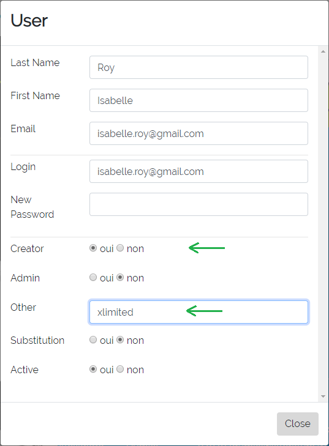
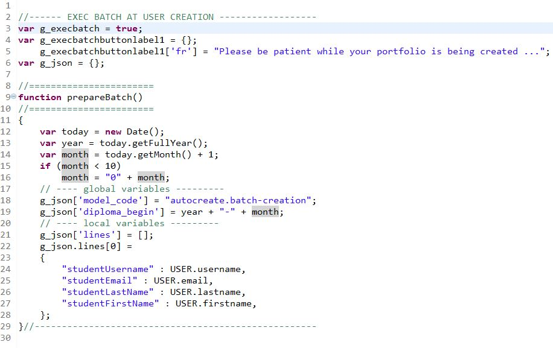

It is possible to automate the creation of a portfolio upon the fist time a user logs into Karuta. In
that case, Karuta will executre a batch created by the designer and the specified in the
application/js/specific.js file.

Execution Condition
For the creation batch to execute upon the user's fist connection, the user account must have the
Creator right — which should be removed at the end of the batch execution. The account must
also have the xlimited instruction in the field Other.

NOTE: if CAS is used, Karuta automatically creates the user account with the CAS identifier
as username, and then sets the Creator right and xlimited instruction the field Other.
Step 1 — Backend Configuration
In the backend's configKaruta.properties configuration file, the following values must
be set:
- casCreateAccount=y
- createAsDesigner=y
Step 2 — Writing the Creation Batch
The batch must include the instructions to create one or more portfolios for the user and then
share these portfolios with said user in the desired role. In the end it must also:
- remove the user's Creator right;
- unshare the new portfolios from the user in the designer role;
- Change the ownership of the new portfolios to root.
Automatic creation batch example:

Download this batch model here
or see the detailed explanation of the model at the bottom of the page.
Étape 3 — Application (Frontend) Configuration
The creation batch and the variables it refers to must be specified in the frontend's
application/js/specific.js file. Also, the g_execbatch variable on line 3 must be
set to true.

Creation Batch Details (from Step 2)
Creation of a project for the cohort
Dans notre exemple un projet pour la cohorte sera créé si il n'existe pas déjà. Son code et
son libellé seront la valeur de la variable globale définie dans le fichier specific.js
(année-mois du système).

Création du portfolio de l'utilisateur
Partage du portfolio avec l'utilisateur dans le bon rôle
Mise à jour des ressources profil dans le portfolio
Dans notre modèle de portfolio, il y a le nom, prénom et couriel de l'étudiant.
Départage du portfolio d'avec l'étudiant dans le rôle designer
Le création du portfolio par l'étudiant en avait fait le designer. Or l'étudiant ne doit pas
avoir plus d'un rôle dans son portfolio.

Départage du projet cohorte d'avec l'étudiant dans le rôle designer

Changement de propiétaire du portfolio pour root
Idem point précédent : la création du portfolio par l'étudiant en avait fait le propriétaire.

Changement de propiétaire du projet cohorte pour root